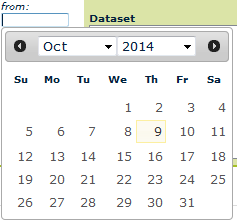

After dataset selection, configure the date interval.
Click on a date input textbox to open an interactive calendar in a small overlay:

and select a valid date with the mouse click or write directly into the textbox a valid date in European format ("dd/mm/yyyy", ie: "05/11/2012").
Click on the "arrows" to facilitate navigation through large timeframes.
Click on the info button to read more details about the dataset and the time coverage.
When a dataset has been selected, the from and to date are automatically changed to start and end date of the selected layer.